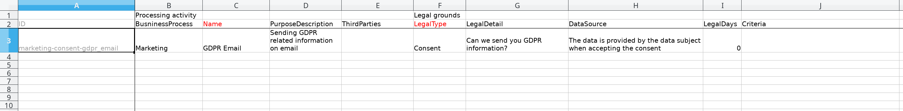
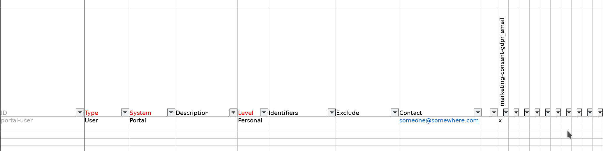

GDPR data types and purposes configuration¶
Note that this document assumes you are familiar with GDPR concepts and nomenclature.
Configuring the GDPR data types and purposes¶
Before the end users/customers can start using your GDPR platform, you must configure the data types, purposes and consents for your organisation.
You do this by editing a GDPR Excel setup template file. Download this template
to you computer and edit it to reflect your needs. After it has been edited you can upload the result to the GDPR
platform to configure it.
The spreadsheet contains two sheets; “Purpose” and “Data type”.
The purpose sheet¶
The purpose sheet contains information about your business activities and the legal grounds of why you are collecting this information. The data you enter here is used by the “Data types” sheet. The data in this sheet are information about the GDPR “purpose” and is visible to the user as a navigational “tab” in the GDPR data access portal user interface and, if the purpose is a consent type of purpose, as something the user can potentially opt in or out of.
The purpose sheet is divided into two sets of columns; “Processing activity” and “Legal grounds”. These sets are further divided into columns:
{kind=link}
Processing activity¶
Column |
Description |
|---|---|
|
The ID of the purpose - it is automatically computed from the other columns. Do not edit it manually. |
|
A short description of which high level business proccess/group the purpose belongs to, for example “Marketing” or “Employment”. |
|
A short name describing the the purpose at a more detailed level than |
|
A longer description describing the purpose in more detail. It should be long enough that the end user can understand the purpose. For example “Handling salary information for employees” or “To survey employee satisfaction”. |
|
With which third party organisations or entities is information gathered for this purpose shared (leave blank if the data is not shared). |
Legal grounds¶
Column |
Description |
|---|---|
|
These are the legal grounds for processing of personal data. Without any of these grounds, the processing is unlawful. In addition to identifying the legal ground set out below, the processing of data must also be necessary in connection with the given legal ground, i.e.:
|
|
The contents/description of the applicable LegalType relevant for the particular case. E.g. contents of the consent: Can we use your e-mailaddress to send you information about GDPR? In case of legal obligation + law: which law is applicable for the neccessary processing of the data in question. |
|
Where the data stored is gathered from, and/or how it is gathered. |
|
The number of days the data stored for this purpose is stored. |
|
Criteria corresponds with LegalDays. Where the LegalType is contract what are our criterias for keeping the data for a given number of days. Where the legal type is legal obligation + law the criteria will often be found in the law provision. |
|
A ISO code for the language used. |
The data type sheet¶
The data type sheet contains all the types of data your organisation stores about GDPR subjects. It is linked to one or more of the purposes you have defined in the purposes sheet.
{kind=link}
The sheet is divided into two parts; the leftmost columns are properties for the data type, the rightmost part is a matrix where you enter a “x” value for each purpose the data type is governed by. These latter columns are automatically generated from the purposes you set up in the “purposes” sheet.
The data type properties¶
Column |
Description |
|---|---|
|
The ID of the data type - it is automatically computed from the other columns. Do not edit it manually. Note that the maximum length of this field is 32 characters. If the computed contents is larger than 32 characters, please limit the size of the “Type” and/or “System” field to stay within the 32 character limit. |
|
A short description what type of data this is (for example “Customer” or “Employee”). Note that the combination of “Type” and “System” must be less than 32 characters (including whitespace). |
|
A short name of the system where the data is residing (for example “CRM” or “ActiveDirectory”). Note that the combination of “Type” and “System” must be less than 32 characters (including whitespace). |
|
A longer description of the type of data to make it easier for the data subject to understand what the data is |
|
The “level” of the data - it can be either “Personal” or “Related”, i.e. directly about the data subject or indirectly (for example data about the customer such as address or orders for the customer, respectively) |
|
An comma separated list of email-addresses for who should get notified when a GDPR data access request or change request is received by the GDPR platform. The should be no whitespace before or after the comma, if the contents contain a comma-separated list of email addresses. |
|
All columns to the right hand side is automatically generated from the “purposes” sheet. It creates a matrix where putting in an “x” value for a specific purpose for a specific data type indicates that this data type is covered by that purpose. You can put a mark in more than one purpose column. |
Updating GDPR data types and purposes¶
When the spreadsheet is filled out, you can upload it to the GDPR platform by navigating to the “GDPR” section on the right hand side of the management studio GUI. Here you can upload the setup excel file in the Data type template section.
If the spreadsheet file is made availble at a shared URL you can configure the GDPR portal to upload it at regular intervals.
After uploading the file, the platform data structures will be updated with this information and the data access portal user interface will reflect the purposes and data types defined in the spreadsheet (note that this process can take a few minutes after upload).
In the management studio for the GDPR platform datahub you can inspect the current configuration by navigating to the gdpr-data-type
and gdpr-purpose datasets.